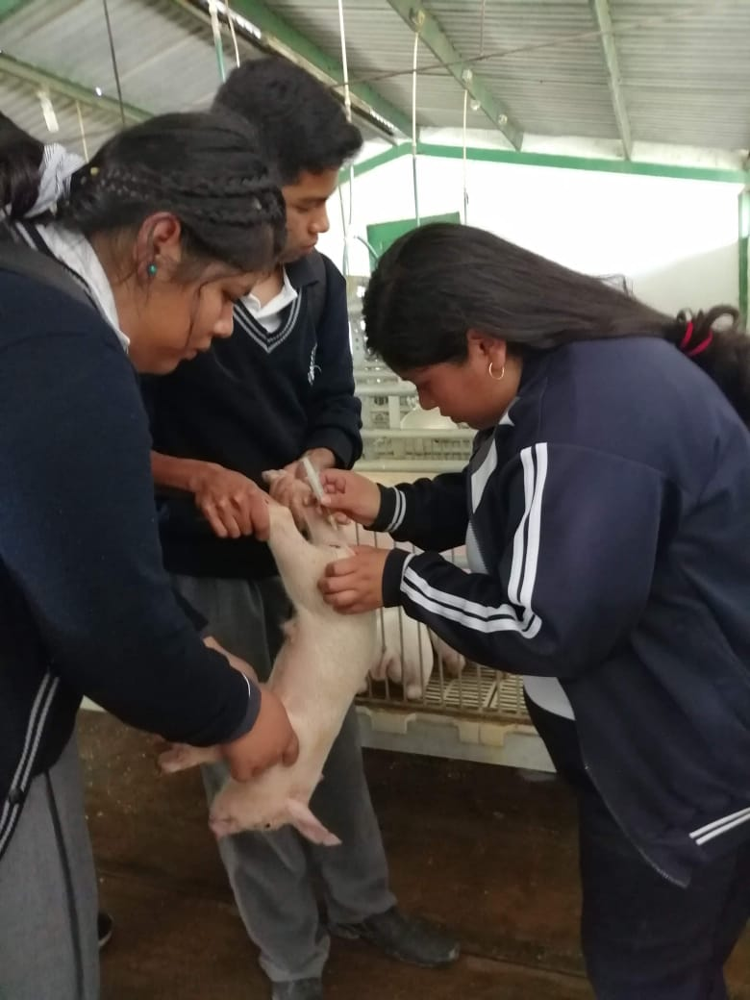

¿Qué competencias voy a desarrollar en esta carrera?
- Manejar especies pecuarias aplicando técnicas de contención y realizarás el mantenimiento e instalaciones y equipo pecuario de acuerdo al sistea de producción
- limentaras a especies monogástricas y poligástricas de interés zootécnico de acuerdo al programa de nutrición
- Mantendrás la bioseguridad en las especies e instalaciones pecuarias de acuerdo a normas establecidas
- Serás capaz de establecer dietas balanceadas, analizando tablas de requerimientos nutricionales
- Podrás realizar cirugías menores en especies pecuarias
- Participarás en la producción de especies pecuarias
- Diseñarás y ejecutarás proyectos pecuarios
Al concluir tu carrera podras desempeñarte en los siguientes ámbitos
En el sector público, privado o de manera independiente brindando servicios relacionados con la cría y explotación de animales, en el cultivo de forrajes
Como auxiliar administrativo, mercadotecnia y comercialización de productos de origen pecuario
¿Qué documentos obtendré al concluir mis estudios de bachillerato?
Un certificado de estudios de bachillerato y un título que debes tramitar para acreditarte como Técnico en Sistemas de Produción Pecuaria.

Técnico en Sistemas de Producción Pecuaria
El bachillerato tecnológico te ofrece, la opción de estudiar el bachillerato, además de cursar una carrera técnica, te prepara para que coninúes tus estudios de nivel superior (lincenicatura o ingeniería), o bien, puedas incorporarte al mercado laboral o autemplearte.
¿En cuanto tiempo terminaré el bachillerato tecnológico?
La duración del bachillerato es de seis semestres, mismos que cursarás en tres años
¿Cuál es el propósito de la carrera Técnico en Sistemas de Producción Pecuaria?
Formar técnicos especializados para asistir en la prevención, sanidad, reproducción de especies pecuarias; asi como en el diseño y gestión de proyectos productivos pecuarios
¿En qué momento inicia mi formación en la carrera técnica?
La formación profesional inica en el segundo semestre y culmina en el sexto semestre
¿Que gustos e intereses son recomendables para cursar esta carrera?
- Gusto por el trabo y manejo de especies pecuarias
- Interés en el área químico-biológica
- Gusto por el trabajo de campo
- Habilidades de trabajo en equipo
- Capacidad de seguir normas y procesos
- Habilidades comunicativas